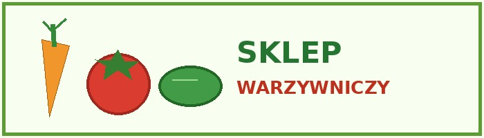

Witamy w naszym sklepie warzywniczym! Można u nas kupić świeże warzywa i owoce na każdy dzień. Mamy produkty do zupy, do sałatki, na obiad oraz na przekąskę. Staramy się, aby każdy mógł znaleźć coś dobrego dla siebie. Część naszych warzyw jest dostarczana przez okolicznych rolników.
Przy zakupach można zapytać o cenę i pochodzenie warzyw. Mamy produkty na różne pory roku. Zapraszamy osoby, które potrzebują kilku pomidorów, ale też klientów robiących większe zakupy.

W naszym sklepie dostępne są na przykład marchewki, ziemniaki, cebula, pomidory, papryka i ogórki. Można kupić warzywa na sztuki albo na kilogramy. Wszystko staramy się układać tak, aby klient od razu widział, co jest w sprzedaży.
Świeże warzywa to podstawa dobrego obiadu. Oferujemy też sałatę, kapustę i buraki. Warzywa są źródłem wielu witamin i składników mineralnych. Warto je jeść codziennie, a nie tylko od święta.
Prowadzimy również sprzedaż większych ilości produktów. Można przygotować u nas zamówienie dla małego lokalu gastronomicznego. Niektóre produkty sprzedajemy w skrzynkach, np. po kilka kg. Na terenie sklepu staramy się utrzymywać porządek i miłą obsługę. Przykładowa powierzchnia skrzynki może wynosić 1 m2, a rośliny podczas wzrostu pobierają CO2 z powietrza.
© Łanecki